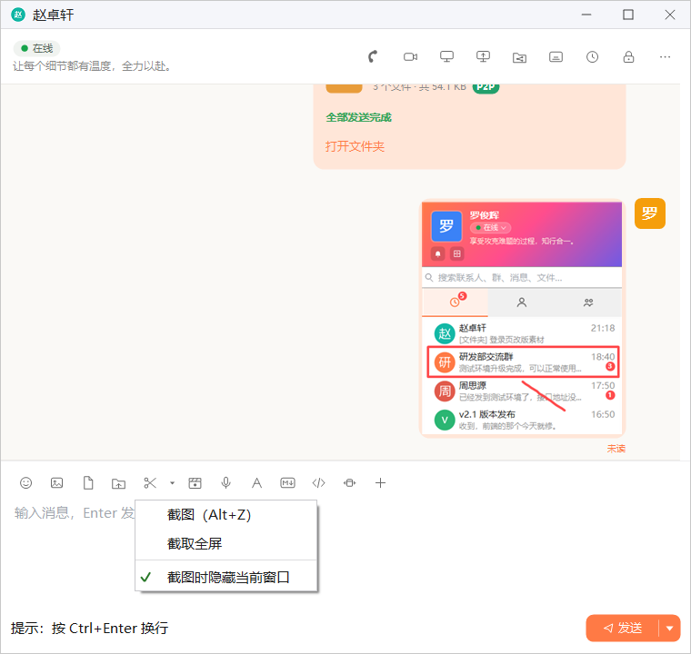
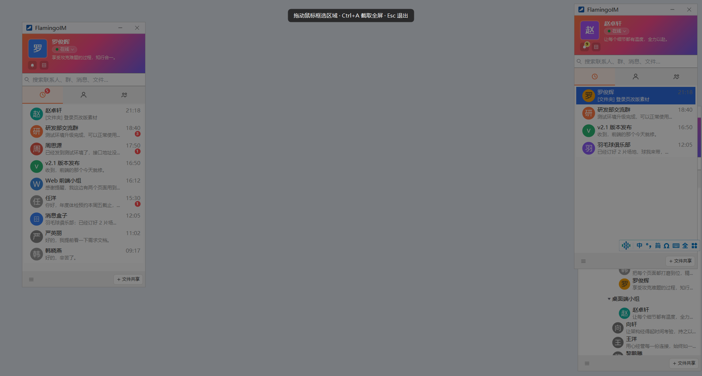
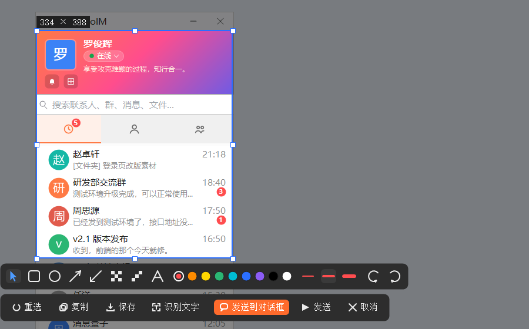
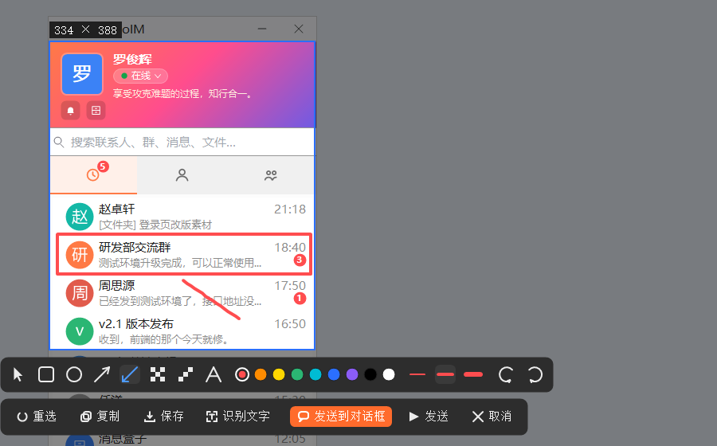
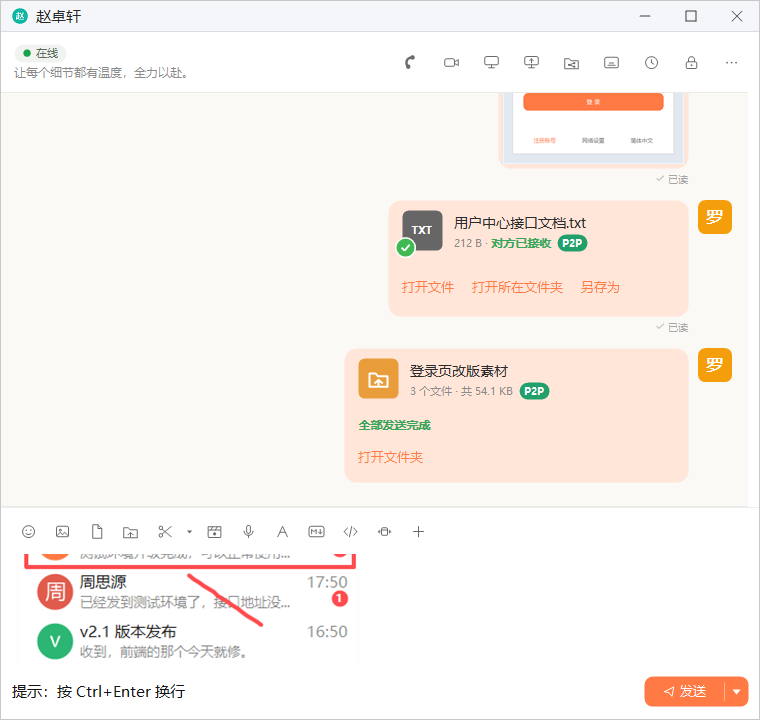
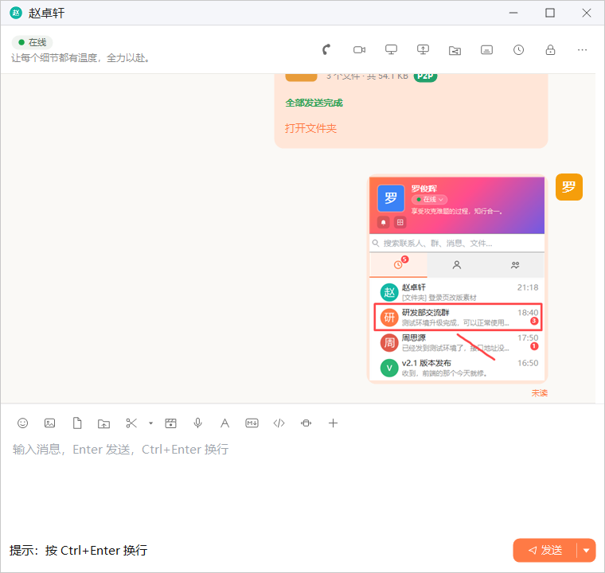
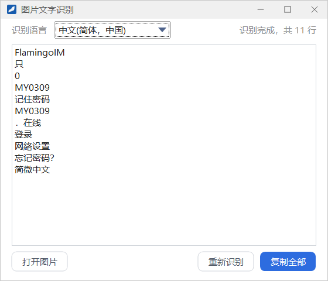

截图与图片文字识别
FlamingoIM 自带截图工具：框选屏幕上的任意区域，加上矩形、箭头、文字、马赛克等标注，然后直接发到聊天里、复制或保存。截图和图片里的文字还可以识别出来，复制成可编辑的文本。
- 适用：全体员工
- 截图不需要登录
- 文字识别需要：Windows 10 及以上，并安装对应语言的识别组件
开始截图
有以下几种方式开始截图：
- 在聊天窗口的输入工具栏点剪刀按钮 截图（Alt+Z）。
- 在任何地方按全局快捷键 Alt+Z。快捷键可以在系统设置里修改，见下文「快捷键与选项」。
- 右键任务栏的 FlamingoIM 托盘图标，选 截图（Alt+Z）。登录前也可以使用。
聊天窗口里剪刀右侧的 ▾ 是截图选项菜单：

- 截图（Alt+Z）：与点剪刀相同。
- 截取全屏：进入截图后，选区直接是鼠标所在的整块显示器。
- 截图时隐藏当前窗口：勾选后，从聊天窗口发起截图时先把这个聊天窗口隐藏起来，截图里不会出现它。
框选区域
开始截图后，整个屏幕变暗，顶部显示提示「拖动鼠标框选区域 · Ctrl+A 截取全屏 · Esc 退出」。

- 按住鼠标左键拖出要截取的区域，松开后选区内恢复正常亮度，左上角显示选区的尺寸（宽 × 高，单位为像素）。按 Ctrl+A 可以直接选中整个屏幕。
- 选区四周有调整手柄。用绘图工具栏最左边的 选择 / 移动 工具，可以拖动选区或拖动手柄改变大小；点操作栏的 重选 则重新框选。
- 任何时候按 Esc 或点 取消，都会放弃这次截图。
添加标注
选好区域后，选区下方出现两行工具栏：上面一行是绘图工具，下面一行是操作按钮。

1 2 3 4 5 6 7 8 9 10 11 12- 选择 / 移动：拖动或缩放选区
- 矩形：拖出一个矩形框
- 椭圆：拖出一个椭圆框
- 箭头：画一个箭头
- 画笔：自由绘制线条
- 马赛克（拖框打码）：拖出一个矩形，框内打上马赛克
- 马赛克（涂抹打码）：在需要遮盖的地方涂抹
- 文字：在选区里点一下，输入文字
- 颜色：九种标注颜色，当前颜色带圆环
- 线宽：细线、中等线、粗线三档
- 撤销：撤销上一步标注
- 重做：恢复刚撤销的标注

遮盖敏感信息发送截图前，可以用两种马赛克工具遮住手机号、密码等不想让别人看到的内容。
完成截图
下面一行操作按钮的内容取决于你从哪里发起截图。
从聊天窗口发起
| 按钮 | 作用 |
|---|---|
| 重选 | 重新框选区域 |
| 复制 | 复制到剪贴板 |
| 保存 | 保存为 PNG 图片 |
| 识别文字 | 识别选区里的文字，见下文「图片文字识别」 |
| 发送到对话框 | 把截图插入聊天输入框，可以再补充文字后一起发送（橙色按钮） |
| 发送 | 立即发送到当前会话 |
| 取消 | 放弃这次截图，与按 Esc 相同 |


从托盘菜单或快捷键发起
这时截图不属于任何会话，操作按钮是 重选、保存、识别文字、取消 和 完成。点 完成 会把截图放入剪贴板，之后可以粘贴到任意程序，包括聊天输入框。
没有「识别文字」按钮？图片文字识别组件没有加载时，截图工具栏不显示「识别文字」，图片右键菜单和图片查看窗口里的识别入口也会一并隐藏。
快捷键与选项
- 截图快捷键：默认是 Alt+Z。在系统设置的「快捷键」页点「截图」一行的键帽，然后按下新的组合键即可修改。剪刀按钮的提示文字会随之更新。
- 截图时隐藏当前窗口：既可以在剪刀旁的 ▾ 菜单里勾选，也可以在系统设置的「聊天」页打开或关闭，作用是从单聊、群聊发起截图时，截图里不包含这个聊天窗口。
这两项设置对本机登录的所有账号都有效，系统设置的用法见「系统设置」。
图片文字识别
图片文字识别能把截图或图片里的文字识别出来，变成可以编辑、复制的文本。以下几个地方都能打开「图片文字识别」窗口：
- 截图操作栏的 识别文字，识别选区里的内容；
- 聊天中图片的右键菜单 图片文字识别；
- 图片查看窗口工具栏最右边的识别按钮；
- 主面板系统菜单里的 图片文字识别，打开后点 打开图片 选择本机的一张图片。

- 从截图或聊天图片打开时，窗口会立即开始识别；完成后右上角显示「识别完成，共 N 行」，文字显示在中间的文本框里。
- 识别结果可能有个别错字（例如图中的「简微中文」），可以直接在文本框里修改。
- 识别效果不理想时，在左上角 识别语言 下拉框里换一种语言，再点 重新识别。
- 点 复制全部 把文本复制到剪贴板；点 打开图片 可以换一张图片识别。
使用条件文字识别使用 Windows 自带的识别引擎，需要 Windows 10 或更高版本；在更早的系统上点击识别入口会提示「当前系统不支持文字识别，需要 Windows 10 或更高版本。」系统里还要装有对应语言的识别组件，没有时会提示到系统设置的「语言」页面添加中文或英文，装好后重新启动客户端即可。